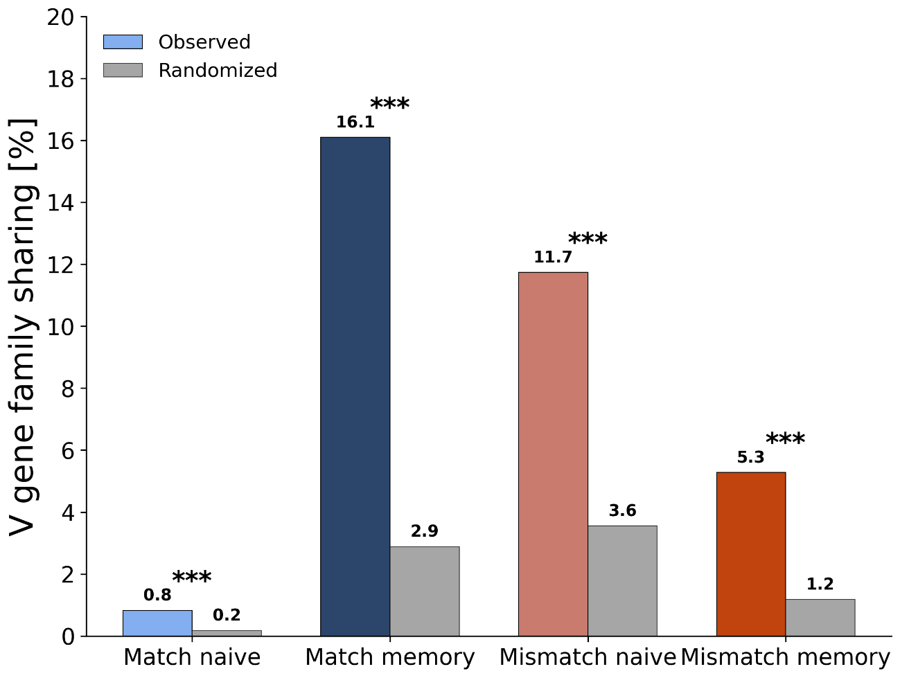
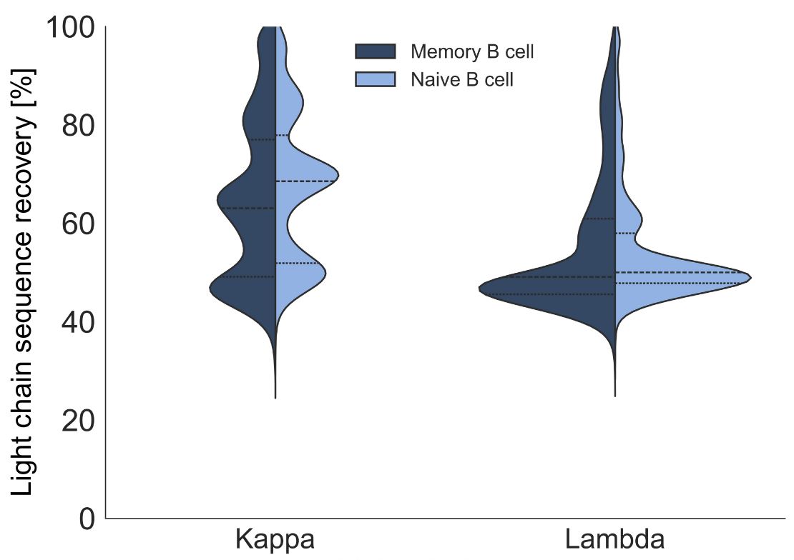
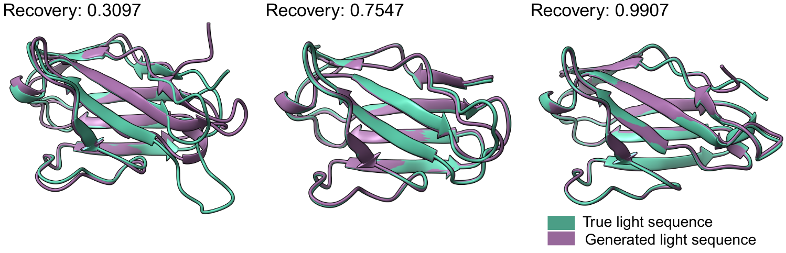
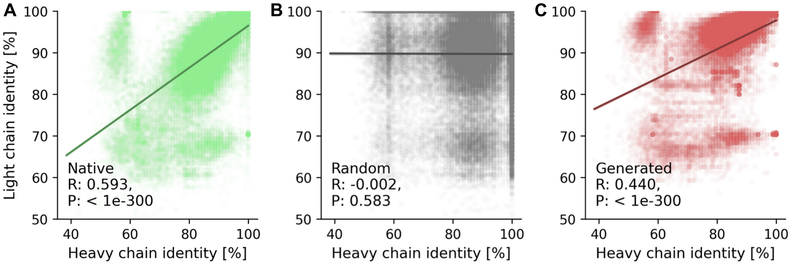

1. Maturation-dependent pairing constraints
Memory B cells exhibit restricted V gene pairing preferences.
When we analyzed the light chains generated from memory B cell heavy chains, we found that 16.1% of memory-derived heavy chains consistently generated light chains using the same V gene family (≥80% consensus). In contrast, only 0.8% of naive B cell heavy chains showed this restriction.
Permutation testing confirmed this pattern significantly exceeds chance expectations (p < 0.001), demonstrating that the model learned genuine maturation-dependent pairing rules rather than simply memorizing training data correlations.
This finding aligns with recent experimental observations that memory B cells show pronounced heavy-light interdependence[8].

Figure 2. Memory B cells show stronger V gene pairing preferences.
Each bar shows the percentage of heavy chains that consistently generate light chains from the same V gene family (≥80% consensus across 10 generated sequences). The colored bars show what Heavy2Light actually generated, while gray bars show random pairings (*p < 0.05, **p < 0.01, ***p < 0.001).
2. The trimodal kappa distribution
When we had a look at the sequence similarity between generated and true κ light chains, we found three distinct peaks instead of a single broad distribution.

Figure 3. Three distinct pairing modes in kappa light chains.
Sequence identity distribution between generated and true light chains, separated by B cell type (naive in dark blue, memory in light blue) and light chain isotype (κ or λ). The three peaks in the κ distribution suggests that antibodies use different pairing strategies, from promiscuous public light chains that work with many heavy chains (~30-40% similarity) to highly specific co-evolved pairs (~70-80% similarity). Lambda (λ) light chains show a simpler pattern with just one peak.
Our hypothesis: These three modes could represent different pairing strategies, from promiscuous public light chains (~30-40% similarity) that pair with many heavy chains, to semi-specialized pairings (~50-60%), to highly specific co-evolved pairs (~70-80%) selected during affinity maturation.
3. Structural conservation despite sequence divergence
Generated light chains with as little as 31% sequence identity (31%) to their true counterparts still folded into correct 3D structures (folding was done with Chai-1 [9]).

Figure 4.
3D structures of generated light chains (purple) aligned with their native counterparts (teal), showing three examples with different levels of sequence similarity. Even when the generated sequence differs substantially from the true sequence (as low as 31% identity), the overall 3D fold remains similar.
4. Co-evolutionary relationships
Generated light chains showed correlated germline identities with their input heavy chains (Pearson R = 0.440), approaching native pairs (R = 0.593) and far exceeding random pairs (R = -0.002).

Figure 5. Heavy2Light learns natural heavy-light chain co-evolution patterns.
Each plot shows how "germline-like" the heavy and light chains are (i.e., how similar they are to the original gene templates before mutations).
(A) Natural antibody pairs show a clear correlation (R = 0.593), when a heavy chain is highly mutated, its light chain partner tends to be mutated too.
(B) Randomly shuffled pairs show no correlation (R = -0.002).
(C) Heavy2Light-generated light chains maintain a meaningful correlation with their input heavy chains (R = 0.440), showing the model learned these natural co-evolution patterns without being explicitly trained on them.